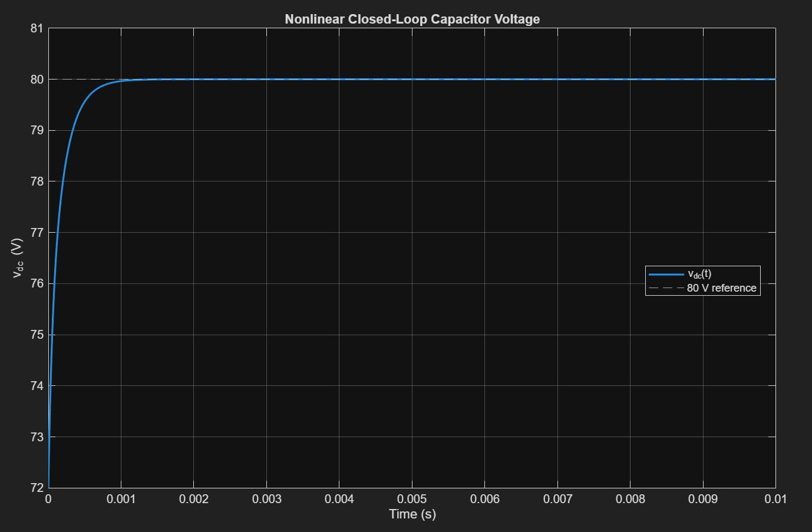

Controls, Power electronics, Coursework
Feedback control of a constant power load
Linearize, design, then see what the nonlinear plant does to your controller.
- When
- March 2026
- Where
- EC ENGR 141, Principles of Feedback Control

A DC source feeds a constant power load through an L-R-C network. The CPL adds a P/v term that makes the plant nonlinear and pushes it toward instability.
Approach
- Model. Nonlinear state space with inductor current and capacitor voltage as states.
- Linearize. About the equilibrium operating point, then derive the transfer function and check stability.
- Design. A controller for settling under 0.05 s with no overshoot.
- Stress it. Run the same controller on the full nonlinear plant with saturation limits on voltage and current.
What it showed
The gap between the linear and nonlinear responses, and how much a CPL's negative incremental resistance erodes stability margin. This is the same problem I now work on at the lab at a larger scale.